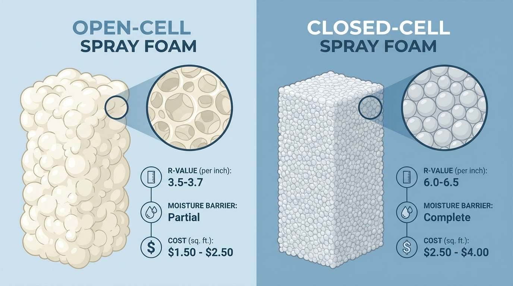
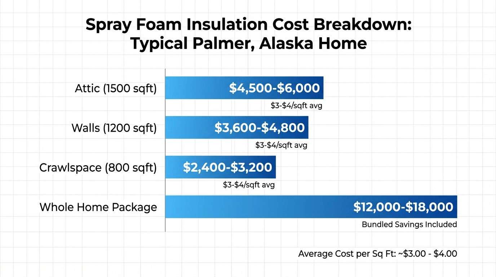

When winter temperatures in Palmer plunge below zero and your heating system runs constantly, you quickly learn that standard insulation simply isn't enough for Alaska's extreme climate. Located in the heart of the Matanuska-Susitna Valley, Palmer experiences over 205 nights below freezing each year, with temperatures ranging from 11°F to 67°F annually. This subarctic climate demands insulation solutions that go far beyond what works in the Lower 48.
For Palmer homeowners, spray foam insulation isn't a luxury upgrade—it's a necessity. With energy costs running 3-5 times higher than most of the continental United States, the difference between adequate and inadequate insulation can mean thousands of dollars each year. The U.S. Department of Energy estimates that up to 40% of home energy loss occurs through air leakage alone—a problem that spray foam eliminates by creating a seamless, airtight barrier.
This comprehensive guide covers everything Palmer homeowners need to know about spray foam insulation: from understanding why closed-cell foam is the superior choice for our climate, to navigating costs, rebates, and finding qualified contractors. Whether you're building a new home, retrofitting an older property in the Mat-Su Valley, or simply trying to reduce heating bills that have gotten out of control, this guide will help you make informed decisions about protecting your home from Alaska's demanding winters.
Why Palmer, Alaska Demands Superior Insulation
Understanding Climate Zone 7
Palmer sits firmly in IECC Climate Zone 7, one of the most demanding climate zones in the United States. The International Energy Conservation Code compliance guide for Alaska specifies that Zone 7 encompasses most of Alaska, requiring significantly higher insulation standards than virtually any other region in the country.
What does Climate Zone 7 mean in practical terms? Palmer experiences between 9,000 and 12,600 heating degree days annually. To put that in perspective, a city like Seattle might see 4,500 heating degree days, while Phoenix sees fewer than 1,000. This means Palmer homes must work considerably harder—and consume far more energy—to maintain comfortable indoor temperatures.
The True Cost of Inadequate Insulation
Alaska's energy costs create a financial reality that changes the insulation equation entirely. According to the Alaska Housing Finance Corporation (AHFC), heating costs in Alaska run 3-5 times higher than most of the United States. For a typical Palmer home, this translates to annual heating bills of $3,000 to $5,000 or more—sometimes significantly higher for older, poorly insulated homes.
The Mat-Su Valley's housing stock compounds this challenge. Over 50% of Alaska homes are between 25 and 45 years old, built before modern energy codes existed. Many of these homes were constructed with minimal insulation and inadequate air sealing, resulting in buildings that literally hemorrhage heat during the long Alaska winter.
Key Climate Statistics
- 205+ nights below freezing annually
- 64 inches average annual snowfall
- 3-5x higher energy costs than Lower 48
- 9,000-12,600 heating degree days per year
Why Standard Insulation Fails in Alaska
Traditional fiberglass batt insulation, while common and affordable, has significant limitations in extreme cold climates. Research conducted by the Oak Ridge National Laboratory reveals a troubling reality: as outside temperatures drop, fiberglass insulation performance degrades dramatically.
Studies show that when outside temperatures dip to -8°F, R-19 fiberglass insulation performs at only R-9.2—a 52% reduction in effectiveness. This performance degradation occurs because cold air infiltrates the gaps between fiberglass fibers, creating convective loops that transfer heat. In contrast, foam insulation actually performs better in colder temperatures, with R-values increasing as temperatures drop.
Why Spray Foam Insulation is Essential for Alaska Homes

Key benefits of spray foam insulation for Alaska's extreme climate
The Dual Function Advantage
What makes spray foam insulation uniquely suited to Alaska's extreme climate is its ability to serve two critical functions simultaneously: high-performance thermal insulation and comprehensive air sealing. While traditional insulation addresses only thermal resistance (R-value), spray foam creates a complete building envelope solution.
When properly applied, spray foam expands to fill every gap, crack, and cavity in the building envelope. This eliminates the air leakage pathways that account for up to 40% of home energy loss. A home with excellent R-value but poor air sealing is like a thermos with a hole in it—the insulation is working, but the escaping air undermines its effectiveness entirely.
R-Value That Improves in Cold
Unlike fiberglass and cellulose insulation, spray foam insulation maintains—and actually improves—its thermal performance in extreme cold. The closed-cell structure traps insulating gas within the foam, preventing the convective heat transfer that degrades other insulation types.
Superior Moisture Management
Palmer's freeze-thaw cycles create unique moisture challenges that spray foam is specifically designed to handle. Closed-cell spray foam functions as both insulation and vapor retarder, preventing moisture from migrating through wall assemblies where it could condense and cause mold, rot, and structural damage.
The Building Science Corporation, led by renowned building scientist Dr. Joseph Lstiburek, confirms that most moisture problems in houses are due to moisture entry from air leakage. Because spray polyurethane insulation provides an excellent air barrier, this source of moisture is virtually eliminated.
Closed Cell vs. Open Cell Spray Foam: Which is Right for Alaska?
Comparison of open-cell and closed-cell spray foam properties
Understanding the Fundamental Differences
Open-cell and closed-cell spray foam represent two fundamentally different products, despite sharing a similar application method. The differences in their physical properties make them suitable for entirely different applications—and in Alaska's extreme climate, this distinction is critical.
Closed-cell spray foam is a high-density material (1.75+ pounds per cubic foot) that forms a rigid structure with closed, sealed cells. This structure provides R-6 to R-7 per inch of thickness and prevents both air and moisture from passing through.
Open-cell spray foam is a low-density material (approximately 0.5 pounds per cubic foot) that expands to create a semi-rigid structure with interconnected, open cells. This provides R-3.5 to R-3.8 per inch and allows some air and moisture permeability.
The Clear Alaska Recommendation: Closed-Cell
For Palmer's Climate Zone 7 conditions, closed-cell spray foam is the recommended choice for all thermal envelope applications. Here's why:
| Feature | Open Cell | Closed Cell | Alaska Winner |
|---|---|---|---|
| R-Value per Inch | R-3.5-3.8 | R-6-7 | Closed Cell |
| Vapor Barrier | No | Yes (at 2"+) | Closed Cell |
| Moisture Resistance | Low | High | Closed Cell |
| Air Sealing | Good | Excellent | Closed Cell |
| Structural Strength | Minimal | Significant | Closed Cell |
| Cost per Board Foot | $0.70-$1.10 | $1.20-$1.80 | N/A |
| Cold Climate Suitability | Poor | Excellent | Closed Cell |
R-Value Requirements for Palmer Alaska Homes

R-value requirements for different areas of Palmer, Alaska homes
Climate Zone 7 Code Requirements
The Alaska Building Energy Efficiency Standard (BEES), administered by AHFC, establishes minimum insulation requirements based on the 2018 International Energy Conservation Code with Alaska-specific amendments.
| Building Component | Minimum R-Value | Closed Cell Thickness |
|---|---|---|
| Ceiling/Attic | R-49 to R-60 | 7-9 inches |
| Exterior Walls | R-21 to R-30 | 3-4.5 inches |
| Floors Over Unconditioned | R-38 | 5.5-6 inches |
| Crawlspace Walls | R-25 minimum | 4 inches |
| Rim Joists | R-20 minimum | 3 inches |
Why Thickness Matters for Moisture Safety
Research from the Cold Climate Housing Research Center reveals a critical insight that many homeowners miss: insufficient foam thickness can actually create worse moisture problems than no foam at all.
CCHRC's multi-year wall moisture studies found that adding only 2 inches of exterior foam insulation in Alaska climates can increase mold risk rather than reduce it. For Palmer's climate, approximately 6+ inches of closed-cell spray foam is required to maintain safe wall temperatures and prevent condensation in wall cavities.
How Spray Foam Prevents Ice Dams in Alaska

How spray foam insulation prevents ice dam formation
Understanding Ice Dam Formation
Ice dams are among the most destructive winter problems facing Palmer homeowners. These ridges of ice that form at roof edges can cause thousands of dollars in water damage, destroy ceilings and walls, and create mold problems that persist long after the ice melts.
Ice dams form through a predictable process:
- Heat escapes through a poorly insulated attic
- Snow melts on the warm roof surface above
- Water runs down toward the colder roof edge at the eaves
- Water refreezes at the cold overhang where no heat escapes
- Ice builds up into a dam that blocks further drainage
- Water backs up under shingles and into the home
How Spray Foam Breaks the Cycle
Spray foam insulation prevents ice dams by addressing the root cause: heat escaping into the attic. When properly applied, spray foam creates an airtight seal that prevents warm air from escaping through the ceiling into the attic space. This keeps the entire roof deck at a uniform cold temperature.
Ice Dam Prevention ROI
Ice dam damage can cost $5,000 to $20,000+ per incident. Compare this to proper attic spray foam insulation at $4,000 to $8,000—prevention is more economical than repairs.
For homeowners already experiencing ice dam issues, our ice dam prevention services can address both immediate problems and long-term solutions.
Spray Foam Insulation Cost in Palmer: Investment and Energy Savings
Typical spray foam insulation costs for Palmer, Alaska homes
Understanding Pricing Structure
Spray foam insulation costs in Alaska are measured in board feet (one square foot of coverage at one inch thick). Current pricing for the Palmer area:
Closed-Cell Spray Foam:
- $1.20 to $1.80 per board foot
- Typical wall application (3"): $3.60 to $5.40 per square foot
- Typical attic application (7"): $8.40 to $12.60 per square foot
Typical Project Costs
| Application | Square Footage | Typical Cost Range |
|---|---|---|
| Attic Only | 2,000 sf | $4,000 - $8,000 |
| Walls Only | 1,800 sf | $6,500 - $10,000 |
| Crawlspace | 1,200 sf | $3,500 - $6,000 |
| Whole Home | Complete | $12,000 - $25,000 |
Energy Savings and ROI

Energy savings and return on investment for spray foam insulation
The return on investment for spray foam insulation in Alaska is compelling. Documented energy savings from Alaska homeowners range from 40-50% reduction in heating costs, with some achieving even higher savings in particularly leaky older homes.
| Factor | Before Spray Foam | After Spray Foam |
|---|---|---|
| Annual Heating Cost | $4,500 | $2,500 |
| Annual Savings | - | $2,000 |
| Spray Foam Investment | - | $12,000 |
| Payback Period | - | 6 years |
| Lifetime Savings (30 years) | - | $48,000+ |
Alaska Rebates and Tax Credits for Spray Foam Insulation
Federal Inflation Reduction Act Programs
The Inflation Reduction Act allocated $74.5 million to Alaska specifically for home energy efficiency programs. These funds support two primary rebate programs administered through AHFC:
Home Efficiency Rebates:
- $2,000 to $4,000 for improvements achieving 20-35% energy savings
- $4,000 to $8,000 for improvements achieving 35%+ energy savings
- Higher rebates available for income-qualified households
Home Electrification Rebates:
- Up to $14,000 total for comprehensive electrification projects
- 50-80% of project costs covered depending on income level
- Households below 80% of area median income can receive up to 100% coverage
AHFC Programs
The Alaska Housing Finance Corporation offers additional incentive programs including weatherization assistance for income-qualified homeowners.
Federal Tax Credits
The IRS Energy Efficient Home Improvement Credit provides:
- 30% tax credit on qualified energy efficiency improvements
- Up to $1,200 annually for insulation improvements
- Additional $2,000 available for heat pump installations
- Can be combined with AHFC rebates
Maximizing Available Incentives
For a $15,000 spray foam installation project, a Palmer homeowner might access $4,000+ in AHFC rebates plus $1,200 in federal tax credits, reducing effective cost to under $10,000.
What to Expect During Professional Spray Foam Installation
Why Professional Installation is Essential
Spray foam installation requires specialized equipment and extensive expertise. According to the Cold Climate Housing Research Center, spray foam "requires a high level of experience to install correctly," especially in Alaska's challenging conditions.
The installation process uses:
- High-pressure plural-component spray systems
- Heated hoses to maintain proper chemical temperatures
- Precise mixing at the spray gun
- Specialized personal protective equipment
- Real-time monitoring of application parameters
The Installation Process
Day 1: Preparation
- Site inspection and preparation
- Masking and protection of surfaces
- Removal of old insulation if required
- Ventilation setup
Day 2-3: Application
- Spray foam applied in multiple passes
- Thickness verified throughout
- Trim and finishing as needed
- Quality inspection
Day 3-4: Curing and Completion
- 24-48 hour curing period
- Final inspection
- Cleanup and debris removal
- Walkthrough with homeowner
For attic insulation and crawl space insulation projects, professional assessment determines optimal timing and approach.
Is Spray Foam Insulation Safe? Health and Air Quality Facts
Understanding Off-Gassing
During application and the initial curing period, spray foam does release volatile organic compounds (VOCs). This is why occupants must vacate the home during installation and for 24-48 hours afterward.
Once fully cured, spray foam is chemically inert and considered safe. Properly installed and cured spray foam does not present ongoing health concerns.
Why Tight Homes Are Actually Healthier
A common misconception is that spray foam makes homes "too tight" and unhealthy. The reality is precisely the opposite.
Poorly sealed homes allow uncontrolled air infiltration that can carry:
- Mold spores from wall cavities
- Dust and allergens
- Outdoor pollutants
- Moisture that promotes mold growth
Tight construction paired with mechanical ventilation creates controlled air exchange that's actually healthier than random air leakage.
Frequently Asked Questions About Spray Foam Insulation in Palmer
Is spray foam insulation worth it in Alaska?
Yes, spray foam insulation is absolutely worth it in Alaska's extreme climate. It provides superior energy savings of 40-50% reduction in heating costs, prevents ice dams that cause thousands in damage, lasts 80-100 years, and acts as both insulation and vapor barrier. While upfront costs are higher than fiberglass, most Alaska homeowners see payback in 5-7 years through energy savings alone.
How long does spray foam insulation last in Alaska?
Spray foam insulation lasts 80-100 years in Alaska when properly installed—effectively the lifetime of your home. Closed-cell spray foam offers superior longevity due to its rigid structure and exceptional moisture resistance. Unlike fiberglass or cellulose that can sag, settle, or deteriorate over time, spray foam maintains its structure and R-value indefinitely.
Which is better for Alaska: open cell or closed cell spray foam?
Closed-cell spray foam is definitively better for Alaska's extreme climate. It provides R-6 to R-7 per inch compared to R-3.5 to R-3.8 for open-cell, acts as a vapor barrier to prevent moisture problems, and adds structural strength. Open-cell foam lacks the moisture barrier properties essential for Alaska's temperature extremes. For Palmer's Climate Zone 7, closed-cell is the industry-recommended choice.
How much does spray foam insulation cost in Alaska?
Spray foam insulation in Palmer costs $1.20 to $1.80 per board foot for closed-cell foam. For a typical 2,000 square foot Palmer home, expect to invest $4,000 to $8,000 for attic insulation, $6,500 to $10,000 for wall insulation, or $12,000 to $25,000 for comprehensive whole-home insulation. Available rebates can reduce these costs by $5,000 or more.
Does spray foam prevent ice dams in Alaska?
Yes, spray foam insulation effectively prevents ice dams by sealing your attic and eliminating heat loss through the ceiling. Ice dams form when heat escapes into the attic, melting snow that then refreezes at the eaves. Spray foam creates an airtight barrier that keeps attics cold, preventing the melt-refreeze cycle entirely.
What R-value is recommended for Alaska homes?
Alaska Climate Zone 7 (including Palmer) recommends: Attics R-49 to R-60, Exterior Walls R-21 to R-30, Floors R-25 to R-38, and Crawlspaces R-25 minimum. Closed-cell spray foam achieves R-49 in approximately 7-8 inches, compared to 15+ inches required with fiberglass.
Can homeowners install spray foam themselves?
No, spray foam installation requires professional equipment, training, and expertise. The process uses high-pressure plural-component systems, heated hoses, and precise chemical mixing that cannot be replicated with consumer products. Improper installation can lead to inadequate coverage, poor adhesion, and moisture problems. Professional installation is essential for Alaska's extreme climate.
Is spray foam insulation safe after it cures?
Yes, spray foam is completely safe after fully curing, which takes 24-48 hours. The cured foam is chemically inert, non-toxic, and doesn't emit harmful fumes. During installation, proper ventilation is essential and occupants should stay away. After curing, spray foam is safe for all buildings throughout Alaska.
How thick should spray foam be in Alaska?
Recommended closed-cell spray foam thickness in Alaska: Attics 7-9 inches for R-49 to R-63, Exterior Walls 3-4.5 inches for R-21 to R-31.5, Crawlspace Walls 4 inches minimum for R-25+, and Rim Joists 3 inches for R-21. Thickness is critical—insufficient foam can create moisture problems.
Does closed cell spray foam act as a vapor barrier?
Yes, closed-cell spray foam at 2 inches or greater thickness functions as a Class II vapor retarder, effectively acting as a vapor barrier. This dual function makes it ideal for Alaska's extreme temperature differentials, preventing moisture condensation inside wall cavities. Open-cell foam does NOT provide vapor barrier properties.
How much can I save on energy bills with spray foam?
Palmer homeowners typically save 40-50% on heating costs after spray foam installation. For homes currently spending $4,000-$5,000 annually on heating, this equals $1,600-$2,500 in yearly savings. Up to 40% of home heat loss comes from air leakage, which spray foam eliminates entirely. Most homeowners achieve complete payback in 5-7 years.
Who does spray foam insulation in Palmer, Alaska?
Foamology Insulation provides professional spray foam insulation throughout Palmer, Wasilla, and the Mat-Su Valley. We specialize in closed-cell spray foam for Alaska's extreme climate, offering comprehensive solutions including attic insulation, wall insulation, crawlspace insulation, and ice dam prevention. Contact us for a free estimate and thermal inspection.
Make Your Palmer Home Winter-Ready
Ready to reduce your heating bills and make your home truly comfortable? Contact Foamology Insulation today for a free estimate and professional assessment of your insulation needs.
Get Your Free EstimateProtect Your Palmer Home from Alaska's Extreme Climate
Palmer's extreme subarctic climate demands insulation that goes beyond conventional solutions. Closed-cell spray foam insulation provides the high R-value, air sealing, moisture management, and longevity that Alaska homes require—not as a luxury, but as a fundamental necessity for comfortable, affordable homeownership.
The numbers are clear: 40-50% energy savings, 80-100 year lifespan, ice dam prevention, and payback periods of 5-7 years make spray foam insulation a smart investment for any Palmer homeowner. With federal and state rebates now making professional installation more affordable than ever, there's never been a better time to upgrade your home's insulation.
Whether you're in Palmer, Wasilla, Big Lake, or anywhere in the Mat-Su Valley, Foamology Insulation brings the expertise and experience to properly insulate your home for Alaska's demanding winters. Our team understands the unique challenges of building science in extreme cold climates and delivers installations that perform for generations.
Foamology Insulation serves Palmer, Wasilla, Big Lake, Houston, Sutton, and the greater Matanuska-Susitna Valley with professional spray foam insulation services. Visit our gallery to see examples of our work, or explore our services to learn more about how we can help improve your home's energy efficiency.